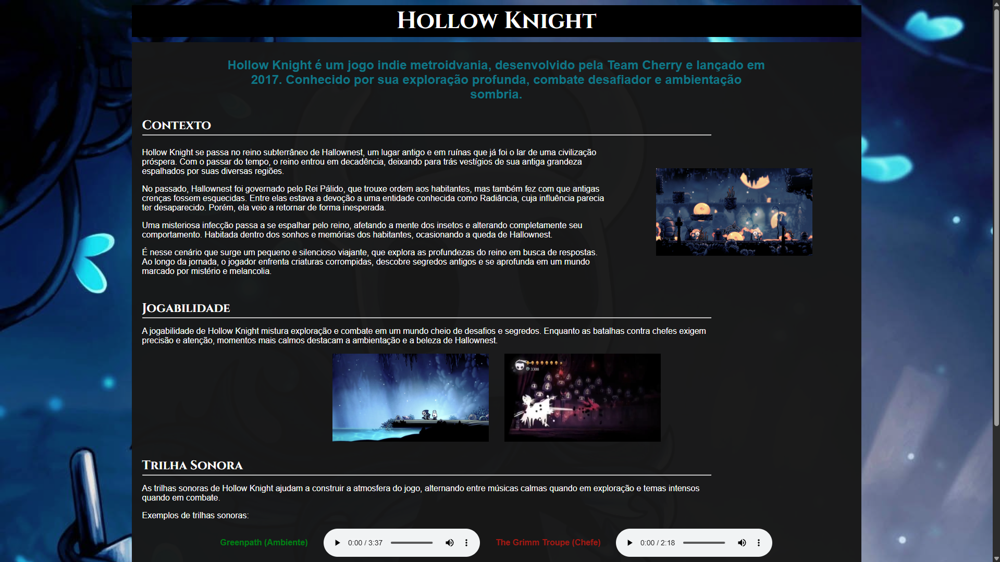
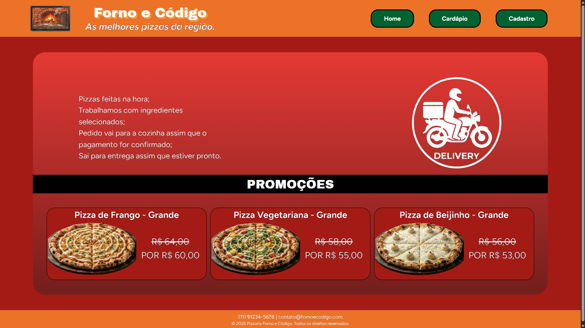
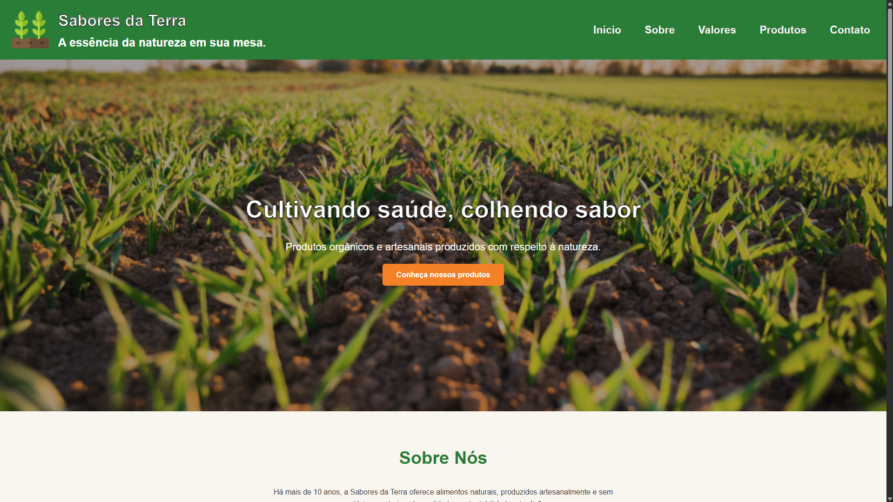

Olá, eu sou Kaiky Paes
Estudante de Desenvolvimento de Sistemas no SENAI
Estudando as linguagens e tecnologias HTML, CSS, JavaScript e Java.
MEUS PROJETOS
Conheça Hollow Knight

Página que conta um pouco sobre um dos videogames "indie" mais famosos do mundo.
Acessar ProjetoPizzaria Forno e Código

Página de uma pizzaria fictícia, modelada no Canva, e usada como base para aprendizado de estilização com CSS.
Acessar ProjetoSabores da Terra

Uma página sobre uma empresa fictícia de cultivo orgânico, utilizada para aprendizado sobre responsividade.
Acessar Projeto